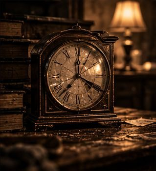
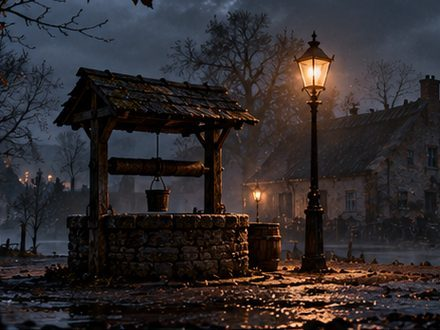

Detectivespel online spelen
Verhoor de verdachten, zoek het bewijs en wijs de dader aan. In je browser, op telefoon of computer.
Zo werkt het
Bij Enigma Mystery speel je een detectivespel gewoon in je browser. Je downloadt niets en maakt geen account aan. Open een zaak en je zit meteen aan het bureau.
Er zijn vier soorten zaken. In de verhaalzaken verhoor je verdachten en dien je een aanklacht in. In de escape rooms kijk je in 3D rond en kraak je sloten. De logicapuzzels zijn pen-en-papierpuzzels op het scherm, en de cozy spellen speel je rustig, zonder klok.
Elke zaak is fictief en heeft precies één oplossing. Van elke soort is minstens één zaak gratis. Wil je alles spelen, dan koop je eenmalig de Pro-pas voor €3,99.
Begin met deze zaken

Villa Meridiaan
Een val van de keldertrap. Of toch niet?
De Nachtportier
Vijf plattegronden. Eén portier die te veel wist.

De Stilstaande Klok
Opgesloten met het lichaam. In 3D.

Hotel Winterlicht
Elf kamers, elf moordpuzzels, één gang.
Het Pandjesboek
3.113 namen. Streep weg tot er één overblijft.
De Zwarte Kolom
Drie nachten, drie doden, één rooster.

De Nalatenschap
Een zwak hart, zei de dokter. Het briefje op zolder zegt iets anders.

Het Zwijgende Dorp
Bouw het dorp op. Eén van wie terugkeert, liegt.
Is het echt gratis?
Ja, van elke soort zaak is er minstens één gratis te spelen. De andere zaken speel je met de Pro-pas, eenmalig €3,99.
Heb ik een app nodig?
Nee. Alles werkt in de browser van je telefoon, tablet of computer. Je hebt geen account nodig.
Hoe lang duurt een zaak?
Van twintig minuten tot een paar avonden, afhankelijk van de zaak. Je voortgang blijft bewaard op je apparaat.
Kan ik het samen spelen?
Ja. Veel mensen spelen samen op één scherm en overleggen wie het gedaan heeft.
Jullie eigen versie van een zaak
Elke wandeling of elk spel kan gepersonaliseerd worden met jullie eigen foto's, namen en een thema, voor € 29,95 inclusief ticket. Iets helemaal nieuws, zoals een eigen route of verhaal? Dien een aanvraag in.